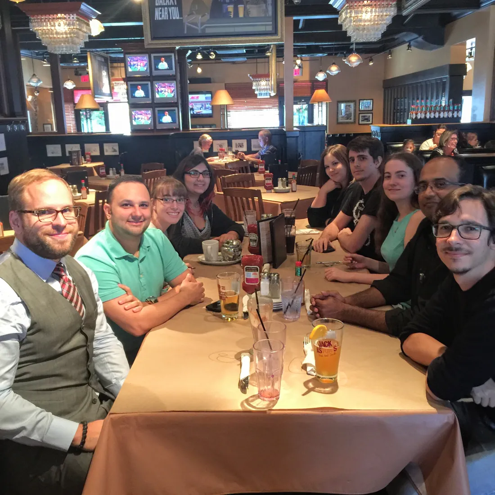

We turned a conceptual gamification model into a scale
- HCI Games Group, University of Waterloo
- Gustavo F. Tondello
- Rina R. Wehbe
- Lennart E. Nacke
- AIT Austrian Institute of Technology
- Lisa Diamond
- Marc Busch
- Gamified UK, designer of the Hexad framework
- Andrzej Marczewski


We wrote the items first, tested them on 133 people, then cut weakest fits
From a rating form in July 2015 to the CHI PLAY stage in October 2016. Six of the 30 items were cut: two that fit poorly (“I look out for my own interests” for Player and “I like to take changing things into my own hands” for Disruptor) and the weakest item of each other type.
24 items score six motivations, and one person can score high on several
The six types appear one by one with what each wants. The dashed amber shape at the end is an example: one person’s scores, high on Free Spirit, Achiever, and Player at once.
Five types gave the same answers two weeks later. The Player type did not
Of 133 people, 40 took the survey again two weeks later. A test–retest asks the same people the same questions twice. When their answers match two weeks apart, the scale is measuring something stable about them. Player matched least (.36). Its four questions also agreed least with each other, so its score was the shakiest, and the 2016 paper flagged it for improvement in future work.
One respondent in 133 scored highest as a Disruptor
Each dot is one person, placed by their highest-scoring type. Disruptor scores averaged 14.9 of 28, while every other type averaged 20 to 22 (Table 5).
14 of 31 elements moved: 8 to a new type, 6 to none
Each row is a game element and each column a user type. A filled cell means people who score high on that type also like that element; a stronger colour means a stronger link. Rows start in the groups the framework predicted. A few seconds after the chart appears, each row moves to the type it actually linked with: pink rows changed group, and the Philanthropist group empties out.
The most reliable scale matched none of its game elements
The Philanthropist scale reached α = .893, the highest of the six, yet correlated at τ = .039 with its suggested elements. Kendall’s τ for each type, framework grouping to improved grouping; the improved grouping gained 9% overall (Tables 1 and 7).
1,082 citations on Google Scholar, and more every year
Citations per year on Google Scholar, as of November 5, 2026. The 2026 bar is still growing.
After 2021, gamification papers doubled while Hexad scale citations held steady
Each year’s count is divided by its 2021 count, so both lines meet at 100 in 2021. We picked 2021 because that is the year Hexad scale citations stopped growing. Before then, they grew faster than the field. Since then the field has doubled, but Hexad scale citations stayed near 75 a year. So the Hexad scale’s share fell from 5% to 2%. Likely reasons: citations now split across the 2019 validation and Hexad-12, the boom brought education and AI work that rarely personalizes, and COVID paused lab and classroom studies. OpenAlex, November 5, 2026.
Direct citations climbed to about 75 a year by 2021 and held there
Papers citing the Hexad scale paper each year, from OpenAlex. The 2026 bar runs to November 4.
Papers that cite the Hexad scale were cited more every year through 2025
6,870 papers cite at least one of the 594 papers that cite the Hexad scale paper. Papers that survey the field carry the Hexad scale into fields that never cite it directly: four of them alone bring 1,025 of these papers (15%), namely the special-issue editorial by Nacke & Deterding (2017) and the reviews by Klock et al. (2020), Vermeir et al. (2020), and Bennani et al. (2021).
The most-cited follow-ups were cited hundreds of times themselves
The 10 most-cited papers that cite the Hexad scale paper. Each bar splits by the year its citations arrived, from cyan in 2016 to magenta in 2026: a long magenta tail means the paper is still gaining. Hover a segment for the year; click a bar to open the paper.
594 papers cite the Hexad scale paper directly
Scroll to run the clock. Each dot is a paper, placed clockwise by publication date from 2016; bigger dots have more citations.
Explore the network as deep as it goes
The Hexad scale paper sits in the centre. Cyan dots cite it, magenta dots cite those, and amber dots sit three or more steps out. Time runs clockwise from 2016. Click a dot to see the paper, then load the papers that cite it.
Scroll or pinch to zoom, drag to pan. Rings past the second load live from OpenAlex, 30 most-cited papers at a time.
The Hexad scale’s family tree runs eight generations deep
Like a family tree, each paper cites the one before it, its parent. Generation 1 cites the Hexad scale directly, and at each step we follow the most-cited child published in or after its parent’s year. By generation 8, the line reaches a 2026 study on AI. The gold arc is not part of the tree. It marks the newest paper citing the Hexad scale directly, published November 3, 2026: Zhang, G. X., Altmeyer, M., & Seaborn, K. (2026). Measuring what motivates maldaimonia in play with the Inventory on Maldaimonic Motivations in Player Experiences (IMPEX). Proceedings of the ACM on Human-Computer Interaction, 10(7), 1–29. doi.org/10.1145/3831291
Authors in 65 countries cite the paper
Citing papers with at least one author based in each country, top 15. Germany, Canada, and Brazil lead.
You can take the Hexad scale in 17 languages, and published studies have tested 7 of them
Translation and validation are separate questions. Seven versions have a peer-reviewed validation, three adaptations report weaker fit or reliability problems, and seven are translations offered on the HCI Games Group website.
Full references for the published versions
We kept improving the scale. Then we made a short version with Jeanine Krath and Max Altmeyer
Two threads run unbroken from the 2016 paper to Hexad-12. Jeanine Krath’s thread starts in 2021 with a study comparing player typologies with the Hexad scale and a review of theory in gamification research that 956 papers now cite, two generations below the Hexad scale paper in the descent chain. In 2023 she led the short form with Maximilian Altmeyer, Gustavo, and Lennart.
Hexad‑12 cut the questions in half and measured the six types better
items instead of 24, because long questionnaires raise dropout and screen fatigue inside bigger surveys
responses used to choose the items through exploratory factor analysis
new responses used to confirm the six-factor structure
valid responses on the public Hexad-12 data page by October 26, 2026
Researchers can now add the Hexad scale to larger studies without weakening the measure. Krath, Altmeyer, Tondello, and Nacke (CHI 2023) report better model fit, reliability, and convergent and discriminant validity than the 24-item scale, and in their words Hexad-12 “resolves issues found in studies using the original Hexad scale.” Better fit in development samples does not prove fewer dropouts, and independent teams keep testing it: a Hong Kong study validated it with 1,610 young gamers, a German validation recommended five dimensions after the Disruptor scale failed its criteria, and a Chinese 12-item form shares only 10 of its items. Read the Hexad-12 paper.
The Disruptor stayed the rarest type, in 2016 and across 23,502 Hexad‑12 tests
Very few people have the Disruptor as their top type: 1 in 133 in 2016, and about 2 in 133 today. It also gets the lowest scores of all six types, which makes it hard to measure. People may not like to admit that they enjoy breaking rules, so they score those questions lower. A German study even dropped the Disruptor because its questions did not hold up. Outlined dots: the 133 people of 2016 by top type. Filled dots: Hexad-12 test shares (12,454 people with one top type) rescaled to 133 people.
The older you get, the more you play with philanthropic tendencies
Mean proportional Hexad-12 scores by age for the 18,423 test takers who shared their age; scores sum to 100% per person. The lines cross in the 21–29 band. Socioemotional selectivity theory offers a reason: as people sense less time ahead, they favour meaningful, prosocial goals over rewards (Carstensen, L. L., Isaacowitz, D. M., & Charles, S. T., 1999, Taking time seriously: A theory of socioemotional selectivity, American Psychologist, 54(3), 165–181, doi.org/10.1037/0003-066X.54.3.165). These are self-selected visitors to a public test, not a population sample. Source: live data at hexad.gamified.uk/data (Andrzej Marczewski), retrieved November 4, 2026.
Most people are a mix of types, so the Hexad scale works best as a six-score profile
Everyone scores on all six motivations, and the top score often wins by a hair. Across 23,502 Hexad-12 tests the three highest shares sit within 0.3 points, and 47% of people tie on two or more types. A single label keeps one number and throws away five. Hexad scale scores sit “on a continuous scale” (Tondello et al., 2019), and the group followed that logic to a trait model: Tondello, G. F., Arrambide, K., Ribeiro, G., Cen, A. J., & Nacke, L. E. (2019). “I don’t fit into a single type”: A trait model and scale of game playing preferences. INTERACT 2019. doi.org/10.1007/978-3-030-29384-0_23
The Hexad scale shows its impact in three places: new research, design choices, and effects on people
New research
1,082citations on Google Scholar, 17 languages, 7 published checks of the scale, and 23,502 Hexad‑12 tests on the public site
Design choices
- Lernnavi: answers from 1,246 pupils led to a decision to add team features (Schultze et al., 2026)
- Xiphias: answers shaped badges for a programming course (Ateneo Laboratory for the Learning Sciences, 2021)
- Ludilearn for Moodle: picks game features for each learner from a Hexad‑12 quiz (MoodleDocs, 2025)
- Wiski: let pupils choose for themselves after the scale felt like too much work (Ooge, 2019)
Effects on people
- Fitness: 40 people over 60 days; activity rose in the personalized groups and stayed flat in the others (Zhao et al., 2020)
- Science class: a class of 17 scored higher on the final test than a class of 18 (Zourmpakis et al., 2024)
- Sokoon: depression and anxiety scores fell in a two-week pilot with 30 adults (Amer et al., 2024)
- Some found nothing: Wiski saw no change in how much pupils practised (Ooge, 2019)
Most of this evidence is small, and the Hexad scale usually arrives bundled with other changes, so they show it was used more than they show it helped. As gamification research moves on, the Hexad scale still gives studies a common measure of player motivation, so studies from different countries and years can be compared and pooled.
Each database counts a different number of citations
The charts use OpenAlex because it records who cites whom, which a network needs. Google Scholar indexes more theses, preprints, and non-English venues.
| Source | Citations | Checked |
|---|---|---|
| Google Scholar | 1,082 | November 5, 2026 |
| OpenAlex | 594 | November 4, 2026 |
| Semantic Scholar | 558 | October 26, 2026 |
| Crossref | 423 | October 26, 2026 |
Method
Direct citers come from the OpenAlex filter cites:W2530695086, fetched year by year and checked against the OpenAlex total. The second ring is every work citing at least one direct citer, minus the direct citers themselves. Country counts use author affiliations recorded by OpenAlex. OpenAlex metadata contains errors, such as books dated before the papers they cite, so the descent chain skips any paper published before its parent. Study figures come from the published tables of Tondello et al. (2016) and summary statistics of its data; no individual responses appear on this page.
